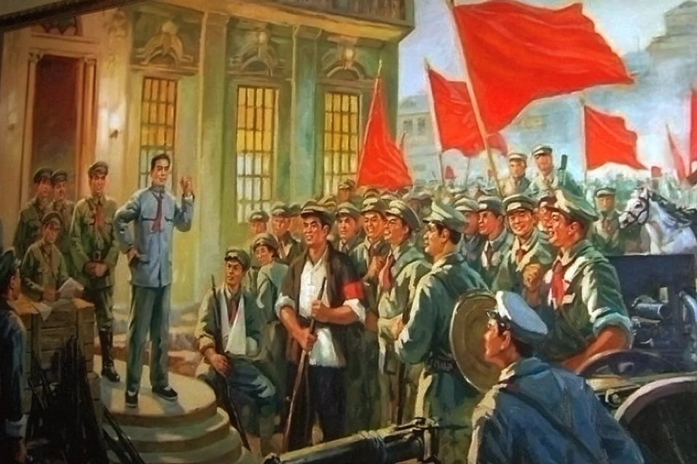

南昌起义
1927 年 8 月 1 日凌晨 2 时，在以周恩来为书记的中共前敌委员会领导下，贺龙、叶挺、朱德、刘伯承等 率领党所掌握和影响下的军队在江西南昌举行武装起义，打响了武装反抗国民党反动派的第一枪。 经 5 个小时的激战，全歼南昌守敌，并控制了全城。

01 · 背景起因 Background
大革命失败。1927 年 4 月和 7 月，蒋介石、汪精卫先后发动反革命政变，国共合作破裂， 大革命失败。共产党人和革命群众遭到野蛮屠杀，中国革命陷入低潮。
血的教训。惨痛的失败使中国共产党彻底认识了掌握军队的极端重要性。 中共中央决定在南昌发动武装起义，成立以周恩来为书记的前敌委员会，用革命的武装反抗反革命的屠杀。
02 · 事件经过 Course of Events
03 · 主要人物 Figures
中共前敌委员会书记，起义最高领导人。
起义总指挥，第二十军军长。指挥第二十军第一、第二师向旧藩台衙门、大士院街、牛行车站等处守军发起进攻。
前敌总指挥，第十一军第二十四师师长。率部向松柏巷天主教堂、新营房、百花洲等处守军发起进攻。
参与领导起义，后率部上井冈山。
起义军参谋长，参与制定作战计划。
在起义中成长起来的年轻军事人才，后来成为人民军队的骨干。
04 · 历史图片与史料 Archive
史料文献 · 南昌起义关键信息
05 · 关键名词解释 Glossary
| 名词 | 解释 |
|---|---|
| 大革命 | 指 1924 至 1927 年间的国民革命运动，以国共合作为基础，目标是打倒军阀、反对帝国主义。1927 年因国民党发动反革命政变而失败。 |
| 反革命政变 | 1927 年 4 月和 7 月，蒋介石、汪精卫先后背叛革命、屠杀共产党人和革命群众的事件，导致国共合作破裂、大革命失败。 |
| 前敌委员会 | 简称"前委"，是中国共产党为领导某一地区的军事行动而设立的最高领导机构。南昌起义时以周恩来为书记。 |
| 国民革命军第二方面军 | 南昌起义后，起义部队为便于行动而沿用的番号。起义军主力随即南下广东，图谋重振革命。 |
| 井冈山会师 | 1928 年，朱德、陈毅率领南昌起义保留下来的部分部队上井冈山，与毛泽东领导的秋收起义部队会师，是中国工农红军创建过程中的重要事件。 |
| 建军节 | 1933 年起，8 月 1 日被确定为中国人民解放军的建军纪念日，正是为了纪念南昌起义。 |
| 武装夺取政权 | 南昌起义标志着中国共产党独立领导武装斗争、以革命武装夺取政权的开端，是"枪杆子里面出政权"这一认识的实践起点。 |
| 三个"伟大事件" | 习近平总书记评价南昌起义重大意义时所用的表述，指出它在中国革命史上的里程碑地位。 |
06 · 意义与价值 Significance
南昌起义打响武装反抗国民党反动派的第一枪，是中国共产党创建人民军队的伟大起点。
标志着中国共产党独立领导革命战争、创建人民军队和武装夺取政权的开端，开启了中国革命新纪元。
1927 年大革命失败的惨痛教训，使党彻底认识了军队的重要性，开始创建完全属于自己的新型革命军队。
8 月 1 日后来被确认为中国人民解放军建军节。习近平总书记曾用三个"伟大事件"评价南昌起义的重大意义。